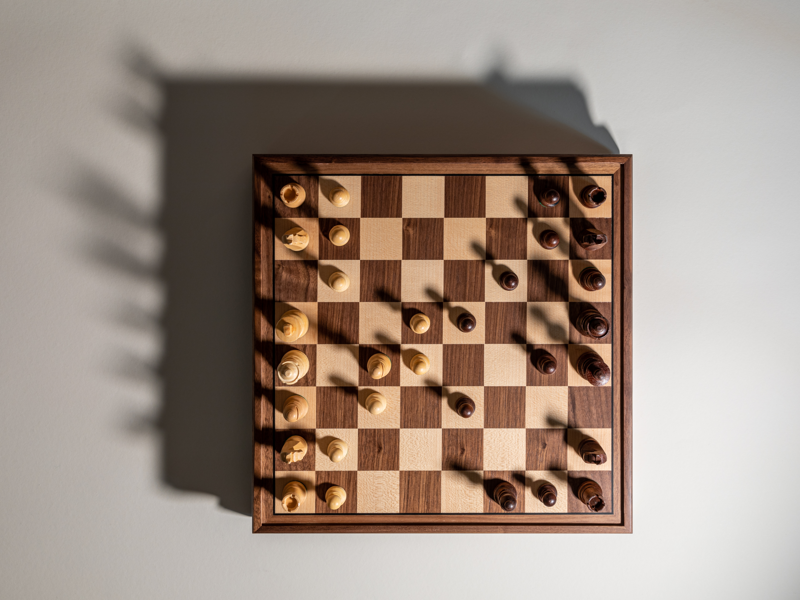

20 yoshli Javohir Sindorov shaxmat boʻyicha jahon toji uchun kurashmoqda
Oʻzbekistonlik grossmeyster Jenevada amaldagi chempion Gukesh Dommarajuga qarshi oʻynamoqda — tarixdagi eng yosh jahon chempionati matchi; gʻolib uchun 14 partiyada 7,5 ochko kerak.

Oʻzbekistonlik 20 yoshli grossmeyster Javohir Sindorov shaxmat boʻyicha jahon chempionati matchida amaldagi jahon chempioni — hindistonlik Gukesh Dommarajuga qarshi kurashmoqda. Bellashuv Shveytsariyaning Jeneva shahri yaqinidagi Koloni (Cologny) hududida, Fondation Martin Bodmer binosida oʻtkazilmoqda.
Nega bu tarixiy
Sindorov ham, Gukesh ham 20 yoshda. Shu bois bu bellashuv shaxmat tarixidagi eng yosh jahon chempionati matchi hisoblanadi. Gukesh bir yil avval eng yosh mutlaq jahon chempioni boʻlgan edi.
Match qoidalari
Match 2026-yil 24-noyabrdan 11-dekabrgacha davom etadi; zarur boʻlsa, 12-dekabrda qoʻshimcha (tay-break) oʻyinlari oʻtkaziladi. Gʻolib boʻlish uchun 14 ta klassik partiyada 7,5 ochko toʻplash kerak. Mukofot jamgʻarmasi 2,5 million dollarni tashkil etadi.

Sindorov bu bosqichga qanday chiqdi
Javohir Sindorov jahon chempionati matchida oʻynash huquqini 2026-yilgi Pretendentlar turnirida qoʻlga kiritdi: u turnirni bir marta ham magʻlub boʻlmay, 14 dan 10 ochko bilan yakunlab, pretendentlikni qoʻlga oldi. 27-noyabr holatiga koʻra, matchning dastlabki partiyalari durang bilan yakunlanib, hisob 1,5–1,5 boʻlgan.
Oʻyinchilar nima dedi
Javohir Sindorov oʻz imkoniyatlarini taxminan «50 ga 50» deb baholadi va 14 oʻyinlik match turnir oʻyinidan jiddiy farq qilishini taʼkidladi. Gukesh Dommaraju esa matchgacha boʻlgan barcha natijalar birinchi partiya boshlanishi bilan ahamiyatini yoʻqotishini aytdi.
Nega muhim
Oʻzbek shaxmatchisining jahon toji uchun kurashi — mamlakat uchun tarixiy voqea. Soʻnggi yillarda Oʻzbekiston shaxmatda jahon miqyosida kuchayib bordi: 2022-yilgi Shaxmat olimpiadasida erkaklar terma jamoasi oltin medal olgan, Samarqand esa 2026-yilda yirik olimpiadaga mezbonlik qilgan edi. Sindorovning gʻalabasi bu yutuqlarning cho‘qqisi boʻlishi mumkin.